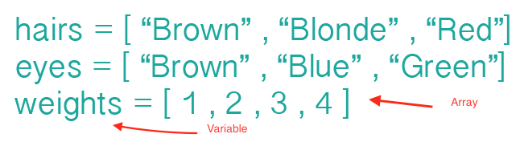
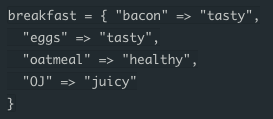

About The Author: Mike London can usually be found on TwitchTv watching Dota 2. @mikelawndawn
Beginning Sessions with Arrays and Hashes
Today's Date: Thursday January 21, 2016
Writing Arrays and Hashes are fairly straight forward.
Here are some examples of arrays:

Arrays are a great way to store information or elements such as strings, integers, floats, or even other arrays. As you can see above, the variables: hairs, eyes and weights are assign values of arrays located inside the square brackets. [ ] Each different element inside the array is seperated by a comma. Note that strings must be wrapped in "" or ''.
The Next topic we are going to cover are Hashes. Hashes are similar to Arrays in that they are containers for elements. THey are split into pairs of information. This split creates the Key and the Value. If we were to create a breakfast variable set equal to a new hash it would look some thing like this breakfast = { }. These curly braces signal a new hash. If we wanted to place some elements inside the hash we would asign a key element which is connected to a value element. So if we wanted to create a breakfast menu with food as the key and whether that food is tasty, healthy, or juicy we would set it up like this:

Each of the Keys is assigned a value. Bacon is assigned the value of tasty, Eggs are assigned the value of Tasty, Oatmeal is assigned the value of healthy, and OJ is assigned the value of Juicy
Although this post may not be as in depth as my other posts, I think it covers the very basics of Arrays, and Hashes. I think they both have their places in the Ruby language. There are so many things someone can do with Arrays and Hashes, This blog posts just covers the basic definitions of the objects.